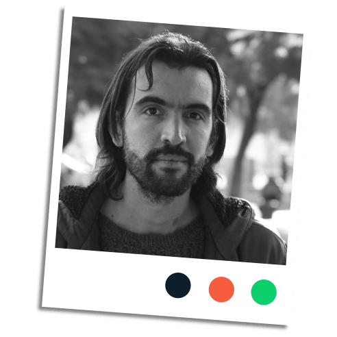

German Doin
La Educación Prohibida. Activista y formador en pedagogías alternativas.
Quiero poner en práctica mi investigación en pedagogías revolucionarias e inspirar
un cambio sistémico en
Buenos Aires.

Mabel Lucía Oddone
Docente y especialista en Gestión educativa.
Veo a un equipo innovador que abrirá la igualdad de oportunidades y el acceso a un aprendizaje transformador y emancipador.

Constanza Monié
Profesora, narradora y editora.
Es la oportunidad de compartir saberes, experiencias y talentos, mientras crecemos como seres humanos que formamos parte de una tejido comunitario.

Juliana Mazza
Psicóloga, psicoanalista
y educadora.
Veo la posibilidad de una red abierta a la comunidad con el interés común de acompañar la infancia repensando nuestro rol adulto.